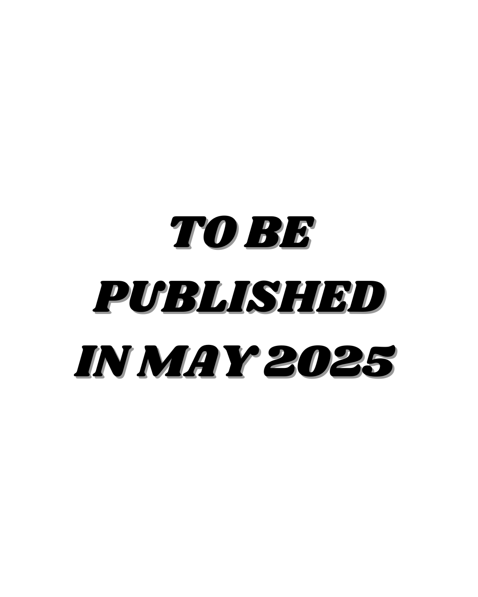

Fall 2024
Career advisors, conversational assistants, and AI tools built by students.
View archived projects →
University of Southern California · Fall 2026
Capstone Course of the AI Minor @USC: Generative AI, NLP and GenAI Products
Student applications of generative AI and natural language processing, organized by semester.
Career advisors, conversational assistants, and AI tools built by students.
View archived projects →
Explore the original student demonstrations and project descriptions.
View archived projects →
The original project page is preserved as supplied, including its publication placeholders.
View archived projects →